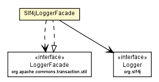

com.davidkarlsen.commonstransaction.spring
Class Slf4jLoggerFacade

java.lang.Object
 com.davidkarlsen.commonstransaction.spring.Slf4jLoggerFacade
com.davidkarlsen.commonstransaction.spring.Slf4jLoggerFacade
- All Implemented Interfaces:
- org.apache.commons.transaction.util.LoggerFacade
public class Slf4jLoggerFacade
- extends Object
- implements org.apache.commons.transaction.util.LoggerFacade
A logger facade which delegates to slf4j.
- Author:
- karltdav
| Methods inherited from class java.lang.Object |
clone, equals, finalize, getClass, hashCode, notify, notifyAll, toString, wait, wait, wait |
Slf4jLoggerFacade
public Slf4jLoggerFacade()
Slf4jLoggerFacade
public Slf4jLoggerFacade(Logger logger)
createLogger
public org.apache.commons.transaction.util.LoggerFacade createLogger(String name)
- Specified by:
createLogger in interface org.apache.commons.transaction.util.LoggerFacade
isFineEnabled
public boolean isFineEnabled()
- Specified by:
isFineEnabled in interface org.apache.commons.transaction.util.LoggerFacade
isFinerEnabled
public boolean isFinerEnabled()
- Specified by:
isFinerEnabled in interface org.apache.commons.transaction.util.LoggerFacade
isFinestEnabled
public boolean isFinestEnabled()
- Specified by:
isFinestEnabled in interface org.apache.commons.transaction.util.LoggerFacade
logFine
public void logFine(String message)
- Specified by:
logFine in interface org.apache.commons.transaction.util.LoggerFacade
logFiner
public void logFiner(String message)
- Specified by:
logFiner in interface org.apache.commons.transaction.util.LoggerFacade
logFinest
public void logFinest(String message)
- Specified by:
logFinest in interface org.apache.commons.transaction.util.LoggerFacade
logInfo
public void logInfo(String message)
- Specified by:
logInfo in interface org.apache.commons.transaction.util.LoggerFacade
logSevere
public void logSevere(String message)
- Specified by:
logSevere in interface org.apache.commons.transaction.util.LoggerFacade
logSevere
public void logSevere(String message,
Throwable throwable)
- Specified by:
logSevere in interface org.apache.commons.transaction.util.LoggerFacade
logWarning
public void logWarning(String message)
- Specified by:
logWarning in interface org.apache.commons.transaction.util.LoggerFacade
logWarning
public void logWarning(String message,
Throwable throwable)
- Specified by:
logWarning in interface org.apache.commons.transaction.util.LoggerFacade
Copyright © 2011. All Rights Reserved.